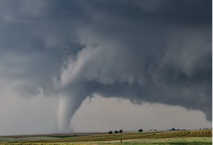

We experience changes in weather conditions every day.

Meteorology is the study of Earth’s atmosphere and weather patterns.

By observing weather, we can predict and prepare for severe storms.
- Storm
- Tornado
- Hurricane
- Forecast
- Atmosphere
- Meteorologist
Write your understanding here....
Write your questions here...
INDEPENDENT READING
Choose a Topic!

What is it like living through a severe tornado?
COVERS
COVERS

What were the worst tornadoes, hurricanes, and blizzards of all time?
COVERS
COVERS

What is it like to drive into the eye of a storm?
COVERS
COVERS
INDEPENDENT READING
Read each day and record facts you’ve learned.
| My Reading | My Fascinating Facts |
|---|---|
INDEPENDENT READING
Record what you have learned from others.
Surviving Storms:
Firsthand Accounts
Firsthand Accounts
Big Storms Throughout
History
History
Storm Chasers
APPRENTICE TEXT 1


1 Meteorologists are weather scientists. They observe weather patterns. They use tools to measure temperature, wind speed, and other conditions. They use these observations to predict, or forecast, weather. They can also use what they see to predict severe storms.

These meteorologists use computers to track a storm.
📘 What does a meteorologist do?
2 Severe storms have heavy winds. They may also have heavy precipitation, such as rain or snow. These storms include tornadoes, hurricanes, and blizzards. They are more likely in certain places and seasons.

BUILD FLUENCY
Build Automaticity
- Underline the first closed syllable in each word.
- Pronounce each word with your teacher.
- Practice reading the words on your own.
- When you are ready, have a partner time you for one minute as you read the words. Keep practicing to improve your speed.
| Words per Minute | Date | Partner | |
|---|---|---|---|
| Timed Reading 1 | |||
| Timed Reading 2 | |||
| Timed Reading 3 |
Severe Storms: Tornadoes
The weather can change from one minute to the next. At this very moment on Earth there are roughly two thousand thunderstorms raining down around the world.
Thunderstorms form when warm, moist air rises and meets up with colder air in Earth’s atmosphere. As the warm air cools, the moisture turns into small water droplets, called rain. The cool air starts to fall. Then, it warms up and rises again. This cycle of rising is called a storm cell. It causes thunderstorms to form. These storms are known for their heavy rain, wind, lightning, and thunder!
Sometimes, if the conditions are right, these storms can make tornadoes. A tornado is a fast-spinning column of air. It forms out of a thunderstorm. If the warm rising air in a storm cell collides with fast-moving winds, then a tornado funnel cloud may form.
People cannot stop tornadoes from forming. But they can learn to predict them. They can warn one another when they are coming. They can also prepare for them to stay safe.